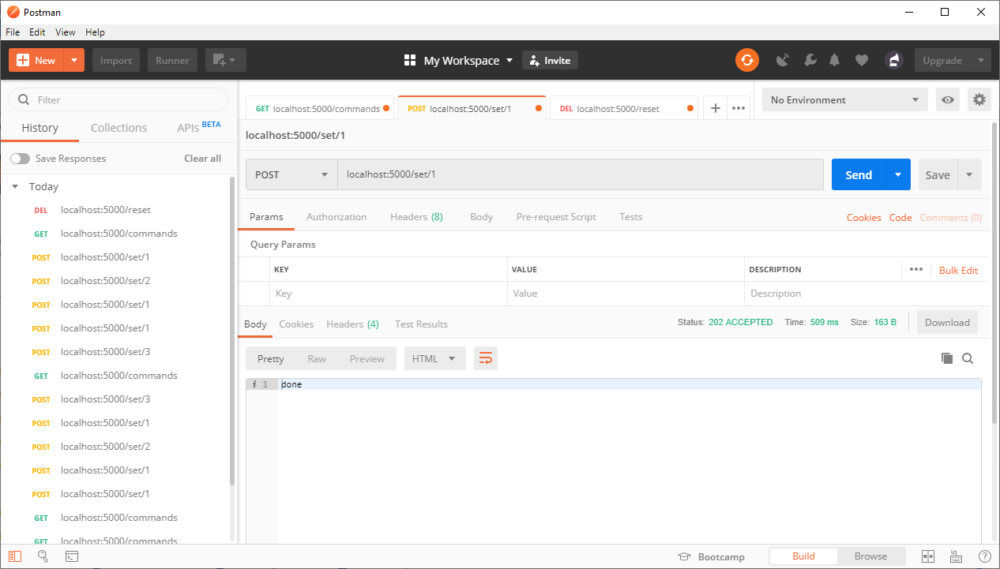
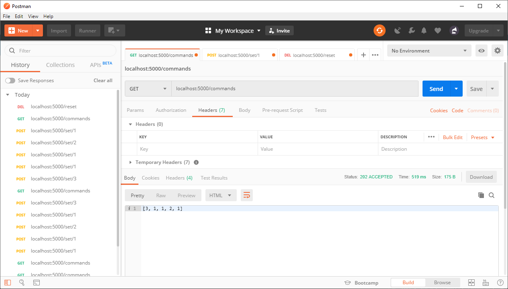
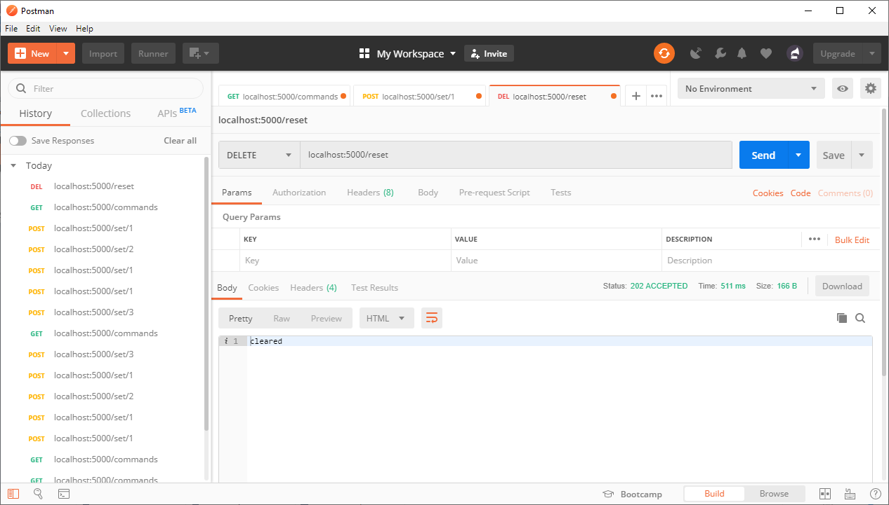
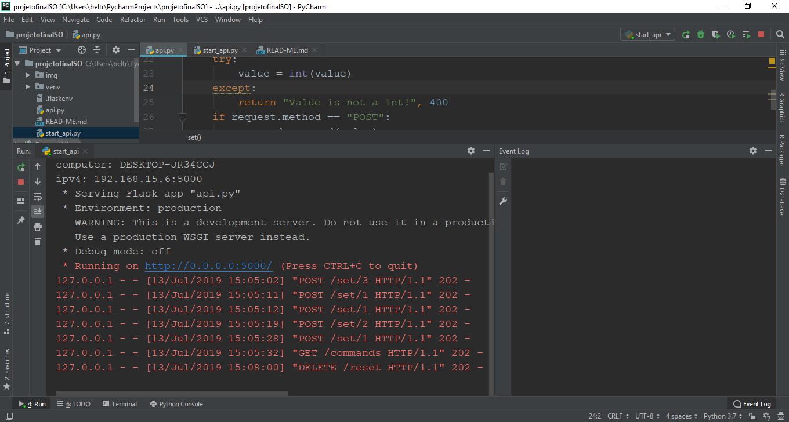

Projeto final de Sistemas Operacionais
Definiçoes de Projeto
Tabela 1: vlores a serem passados para a API /set
| Direção |
Valor |
| frente |
1 |
| esquerda |
2 |
| direita |
3 |
Servidor flask
Por ser baseado em python a framework flask foi escolhida devido a sua simplicidade deimplementação. de modo que com poucas linhas foi possível implementar uma serie de APIs REST para o projeto
dependencias
- Python 3.7
- configurar as variáveis de ambiente para incluir os diretorios onde estão localizados os arquivos python.exe e pip.exe
- pip install flask
- pip install python-dotenv
Notas
- o projeto foi desenvolvido com a IDE:
PyCharm 2019.1.3 (Professional Edition)
Build #PY-191.7479.30, built on May 29, 2019
Licensed to Luís Henrique Beltrão Santana
Subscription is active until January 30, 2020
For educational use only.
JRE: 11.0.2+9-b159.60 amd64
JVM: OpenJDK 64-Bit Server VM by JetBrains s.r.o
Windows 10 10.0
- caso a IDE esteja aberta durante o processo de configuração das variáveis de ambiente será necessário reinicia-la
- para executar o servidor basta executar o script start_api.py
- Por padrão o servidor usa a porta 5000
- o servidor flask foi configurado via o script de inicialização para operar em toda a rede, o script de inicialização irá fornecer o ip da maquina em que o servidor está sendo executado via um print no terminal
Testes

Figura 1: teste para a api de inserir dados

Figura 2: teste para a api de exibir a lista de comandos

Figura 3: teste para a api de limpar os dados

Figura 4: log do servidor
Tutoriais vistos
set up
flask: Hello World!
methods
REST codes
Angular
visando uma implementação resiliente e de boa performace foi excolhida a framework angular para a interação do usuário com o servidor, a codificação empregada é o typescript, que por ser uma linguagem fracamente tipada é bem resistente a erros.
Outra vantagem do Angular é que a framework faz um bom uso da metodologia reativa que permite tratar evenjtos asincronos de maneira simplificada, uma vez que se entenda o paradigma de programação reativa
Dependencias
- NodeJS 10.16.0
- npm 6.9.0
- Angular 8.2.0
- Bootstrap 4.3.1
Notas
- O projeto foi desenvolvido com a IDE:
WebStorm 2019.1.3
Build #WS-191.7479.14, built on May 27, 2019
Licensed to Luís Henrique Beltrão Santana
Subscription is active until January 30, 2020
For educational use only.
JRE: 1.8.0_202-release-1483-b53 amd64
JVM: OpenJDK 64-Bit Server VM by JetBrains s.r.o
Windows 10 10.0
- por padrão o servidor usa a porta 4200
- o servidor não estã configurado para operar em rede de modo que só irá funcionar no computador onde está sendo executado
- configurar o bootstrap no arquivo angular.json conforme demonstrado abaixo
~~~json
(...): {
(...),
"styles": [
"styles.scss",
"node_modules/bootstrap/dist/css/bootstrap.min.css"
],
(...)
}
~~~
Tutoriais vistos
httpClientModule
bootstrap
TI-RTOS